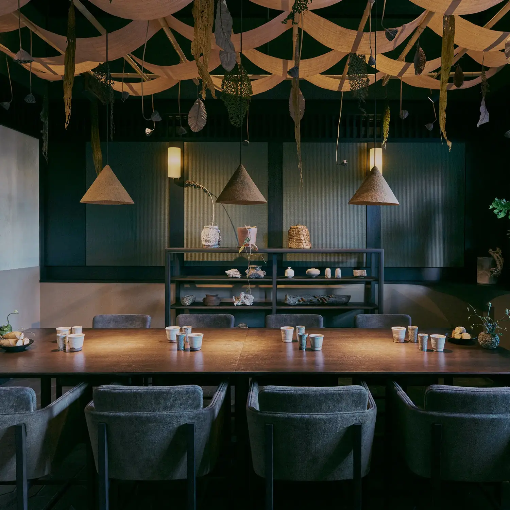
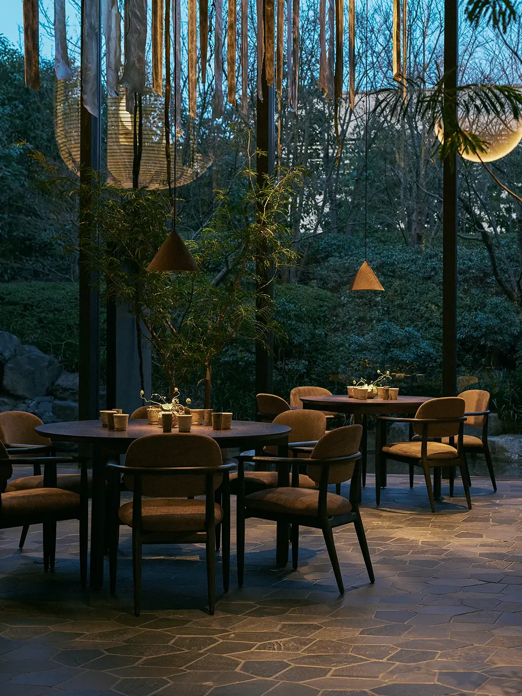

For this special project, three versions of a dark brown oak dining table were custom-designed by Stellar Works. In the main dining room, round versions were each positioned under a conical textured pendant light. These were encircled by several Slow Dining Chairs designed by Space Copenhagen, adding another touch of Danish design into the foray via their tapered wood frames and gently rounded upholstered cushions.
In the two private rooms, long rectangular versions of the oak tables ran below artful ceiling installations: one with ribbons of fabric draped over a bamboo frame, and the other comprising crumpled translucent sheets. Also furnishing these spaces, the Aya Dining Armchair was designed by OEO Studio specifically for Noma Kyoto, and later became a permanent fixture in the Stellar Works portfolio. Its crushed velvet shell hugs the sitter, poised on a geometric frame that invokes traditional Japanese furniture.
All of the interior elements coalesced in tribute to the cultural context, resulting in a considered yet creative environment that lived up to Noma’s globally renowned reputation. For the lucky few who had the chance to experience the pop-up: an unforgettable affair. For the rest of us? We’re waiting with mouth-watering anticipation for the next opportunity.
The exceptional dining experience unfolded across different spaces: a main dining room, a secondary dining area, and two separate private dining rooms. The larger space benefited from a double-height ceiling and a full wall of glazing that overlooked a verdant oasis, allowing nature to take center stage. Flagstone floors and potted trees continued the garden inside, where textured wall panels, sculptural paper lights, and perfectly imperfect ceramic vessels all introduced distinctly Japanese style elements.
